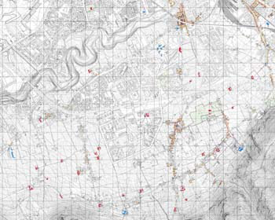

Variente Generale al P.R.G. - Scheda norma - Interventi sugli immobili classificati "Netto Storico"
adeguati ai D.Dir. 558 e 124\DRU\02 di approvazione


Variente Generale al P.R.G. - Scheda norma - Interventi sugli immobili classificati "Netto Storico" |
||
|
Deliberazione n. 7/2004 - Presa d'atto | |
|
Elenco Netto Storico | |
|
Elenco Verde Storico | |
|
Norme Tecniche di attuazione | |
|
Scheda Norma - Tavola 5001 | |
| Scheda Norma - Tavola 5002 | ||
| Schea Norna Tavola 5003 | ||
| Scheda Norma - Tavola 5004 | ||
|
Scheda Norma - Tavola 5005 | |
|
Scheda Norma - Tavola 5006 | |
| Scheda Norma - Tavola 5007 | ||
|
Scheda Norma - Tavola 5008 | |
|
Scheda Norma - Tavola 5009 | |
| Schea Norna Tavola 5010 | ||
|
Scheda Norma - Tavola 5011 | |
| Scheda Norma - Tavola 5012 | ||
|  | Scheda Norma - Tavola 5013 | |
|
Scheda Norma - Tavola 5014 | |
|
Scheda Norma - Tavola 5015 | |
|
Scheda Norma - Tavola 5016 | |
| Scheda Norma - Tavola 5017 | ||
|
Scheda Norma - Tavola 5018 | |
| Elenco completo Strumenti urbanistici generali | ||